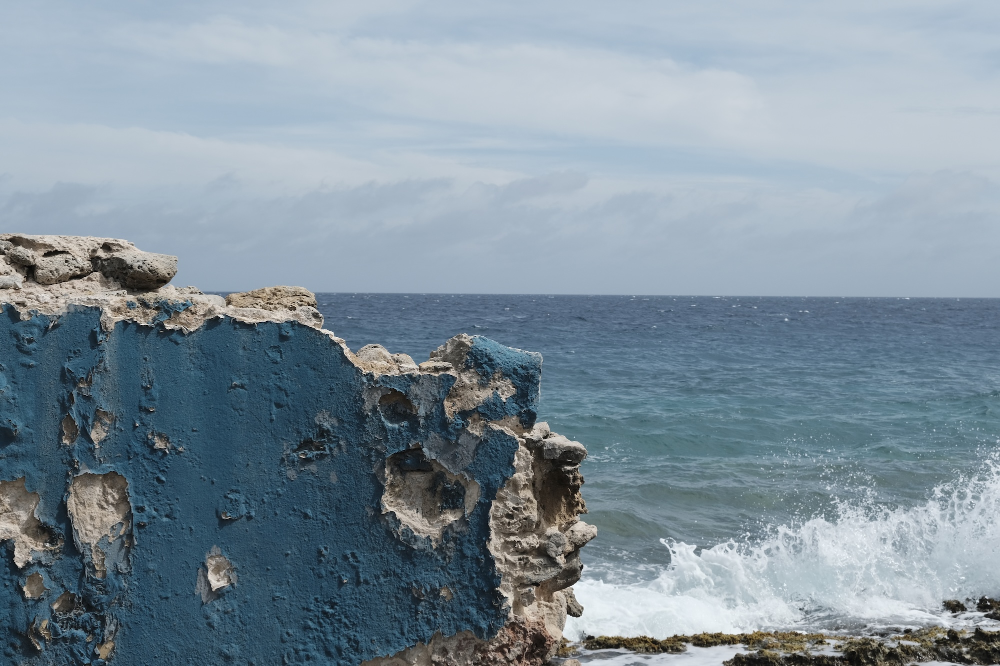
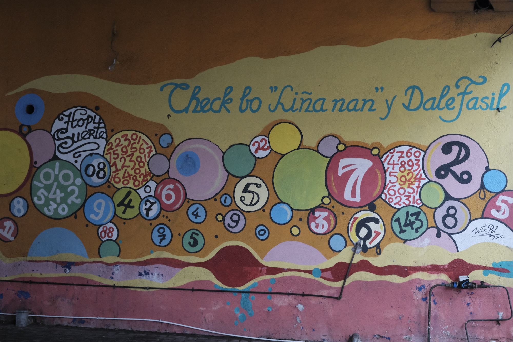
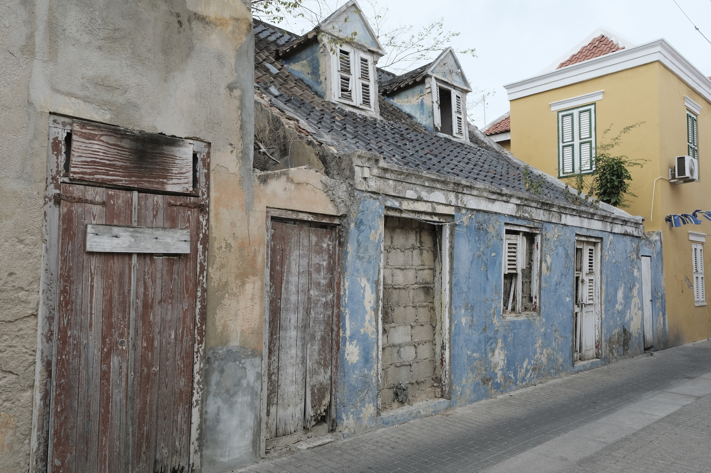

Dag 1
Bon Kòrsou
Papiamentu · welkom op Curaçao
De zon sloeg je tegemoet vóór de deur openging. Aankomst als een andere tijd, een andere logica.

Dag 2
Drai Laman
Papiamentu · draai de zee
De zee kwam drie keer terug — ochtend, middag, avond — en elke keer leek het de eerste keer.

Dag 3
Otro banda
Papiamentu · de andere kant
De muren in Otrabanda praten. De mooiste dingen blijken altijd aan de andere kant te zitten.

Dag 4
Bai buzu
Papiamentu · ga duiken
Onder water is alles stil op een manier die boven water niet bestaat. Wie gedoken heeft, kijkt anders.

Dag 5
Para pober
Papiamentu · rustig aan
De mooiste uren zijn precies die waarin je nergens voor hoeft te stoppen. Het zwembad wacht. Het boek ook.

Dag 6
Pabien
Papiamentu · van harte, gefeliciteerd
Vieren heeft geen reden nodig — het strand, het rif, de tafel, de wijn: alles was al reden genoeg.

Dag 7
Te awor
Papiamentu · tot ziens voor nu
Niet het definitieve adiós, maar het zachte afscheid dat een deur openhoudt. Geen einde, alleen een pauze.

Dag 8 · Amsterdam
Thuiskomen
Nederlands · het werkwoord dat een gevoel is
Niet aankomen, maar thuis komen. Dat zijn twee heel verschillende dingen. Er stond iemand. De rest hoefde niet uitgelegd.